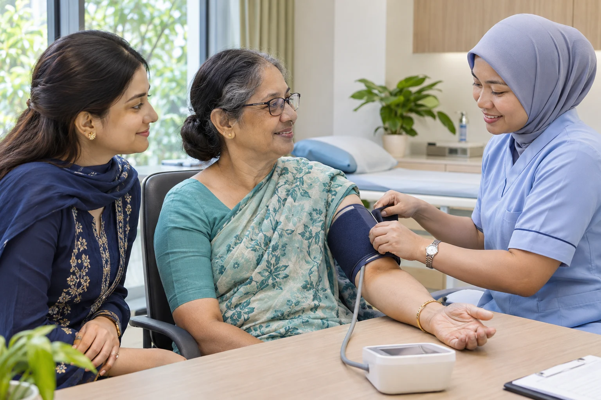
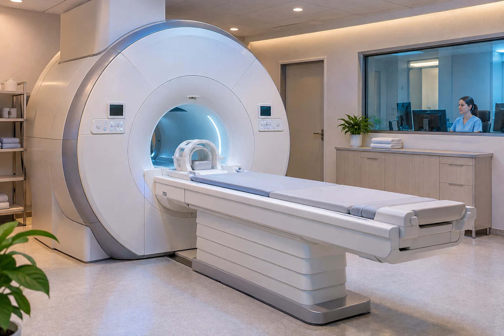

PRACTICAL HELP AT EVERY STAGE
Care is only part
of the journey.
From the first hospital enquiry to the everyday details of your stay, we help connect the arrangements.
01Hospital appointments
A clearer way to begin.
Tell us the hospital or care area you are considering. We help coordinate the appointment request and information the hospital needs.
The hospital confirms the specialist and appointment.
Ask about this support ↗Treatment & estimates
Make room for a plan.
We help coordinate report-sharing, treatment enquiries and hospital-issued estimates, including enquiries about surgery.
Clinical recommendations and admission decisions come from the hospital.
Ask about this support ↗Visa assistance
Prepare the paperwork.
We help you understand the documents requested for your travel arrangements and coordinate hospital documentation where applicable.
The relevant authority decides visa applications.
Ask about this support ↗Airport & local transport
A considered arrival.
Discuss airport pickup, luggage, accompanying family and any mobility needs before travelling.
Transport, availability and charges are agreed for your visit.
Ask about this support ↗Accommodation & family
Space to feel settled.
We help coordinate accommodation enquiries around your hospital, family size and everyday needs.
Room availability, facilities and prices are confirmed individually.
Ask about this support ↗Follow-up coordination
Stay connected after your visit.
We help coordinate further hospital enquiries and appointment arrangements after you return home.
Follow-up instructions and clinical advice come from your treating team.
Ask about this support ↗People at the
heart of the journey.

01 / PERSONAL ATTENTIONSomeone who takes the time.

02 / MODERN FACILITIESA clearer picture of your care.
03 / FAMILY COMFORTRoom for reassurance.
AI-created care scenes. Not photographs of a named hospital, actual patients or treatment outcomes.